КАТАЛОГ ЗАБОРОВ
Забор из сетки "Рабица"+монтаж
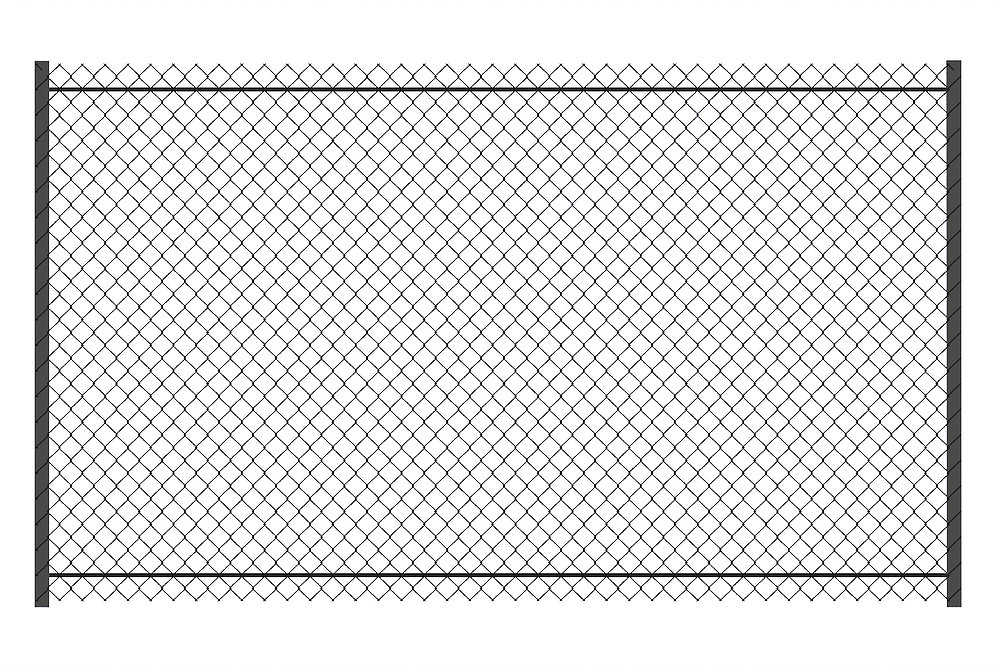Забор из сетки рабицы высотой 1.5 метра с двумя лагами. Цена указана с учётом монтажа.
Забор из Евроштакетника+монтаж
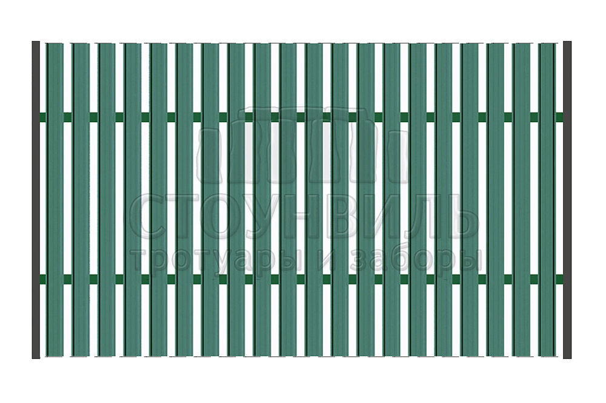Забор из евроштакетника высотой 1.5 метра с двумя лагами. Цена указана с учётом монтажа.
ЦВЕТ
Столбы катрина+профлист, высота 1.5м(без монтажа)
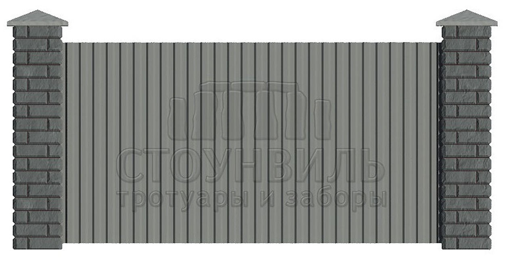
Забор из столбов Катрина, с заполнением из Профлиста со столбчатым фундаментом.
Расчет стоимости складывается из цены 1 погонного метра забора. Формирование окончательной стоимости зависит от длины вашего забора, высоты столбов и внутреннего оформления. На фотографии представлена секция длиной 3,45 м (по осям столбов). Дополнительно рассчитываются: ворота, калитки, доставка.
ЦВЕТ
Столбы Катрина+Евроштакетник, высота 1.5м
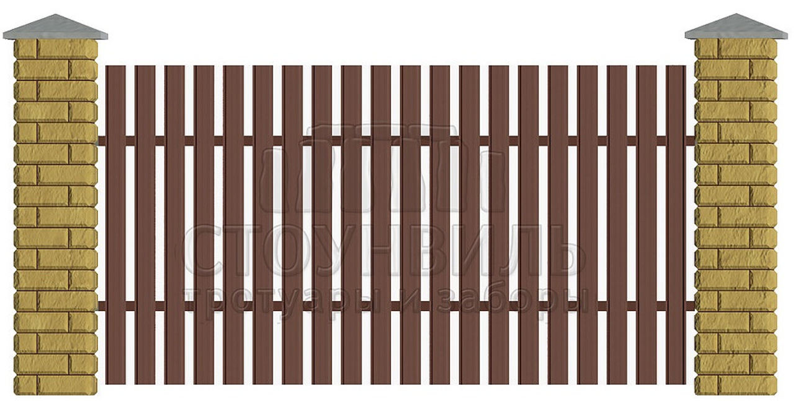
*Начальная цена указана без монтажа
Забор из столбов Катрина, с заполнением из Евроштакетника со столбчатым фундаментом.
Расчет стоимости складывается из цены 1 погонного метра забора. Формирование окончательной стоимости зависит от длины вашего забора, высоты столбов и внутреннего оформления. На фотографии представлена секция длиной 3,36м (по осям столбов).
Дополнительно рассчитываются: ворота, калитки, доставка.
ЦВЕТ
Забор Катрина+Профлист+фундамент, высота 1.5м*
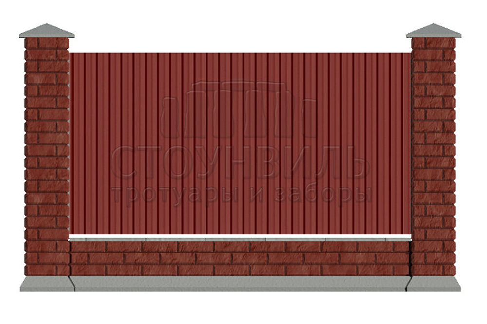
*Начальная цена указана без монтажа
Забор из элементов Катрина, с заполнением из профнастила с готовым фундаментом (основания - ригеля).
Расчет стоимости складывается из цены 1 погонного метра забора. Формирование окончательной стоимости зависит от длины вашего забора, высоты столбов и внутреннего оформления. На фотографии представлена секция длиной 3,22 м (по осям столбов).
Дополнительно рассчитываются: ворота, калитки, доставка.
ЦВЕТ
Забор Катрина+штакетник+фундамент, высота 1.5м*
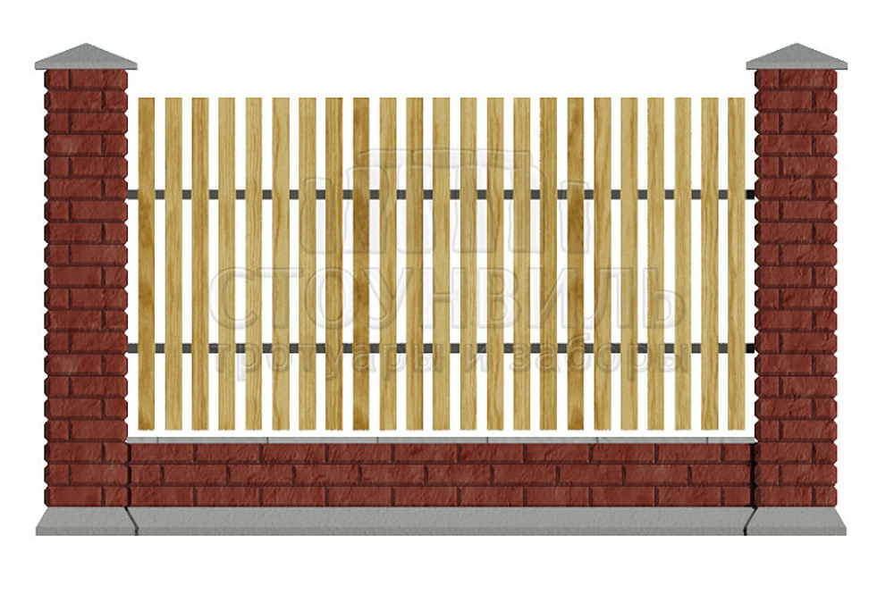
*Начальная цена указана без монтажа
Забор из элементов Катрина, с заполнением из штакетника с готовым фундаментом (основания - ригеля).
Расчет стоимости складывается из цены 1 погонного метра забора. Формирование окончательной стоимости зависит от длины вашего забора, высоты столбов и внутреннего оформления. На фотографии представлена секция длиной 3,22 м (по осям столбов).
Дополнительно рассчитываются: ворота, калитки, доставка.
ЦВЕТ
Забор Катрина+Ковка"15-00"+фундамент, высота 1.5м*
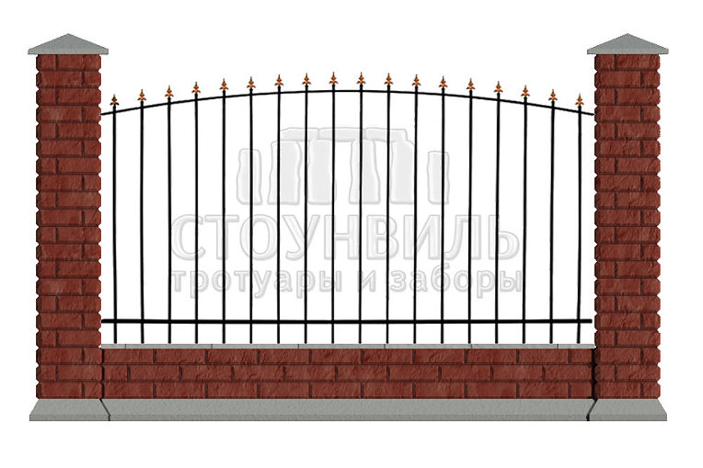
*Начальная цена указана без монтажа
Забор из элементов Катрина, с заполнением из кованных секций, дизайн 15-00, с готовым фундаментом (основания - ригеля).
Расчет стоимости складывается из цены 1 погонного метра забора. Формирование окончательной стоимости зависит от длины вашего забора, высоты столбов и внутреннего оформления. На фотографии представлена секция длиной 3,22 м (по осям столбов).
Дополнительно рассчитываются: ворота, калитки, доставка.
ЦВЕТ
Забор из профнастила+монтаж
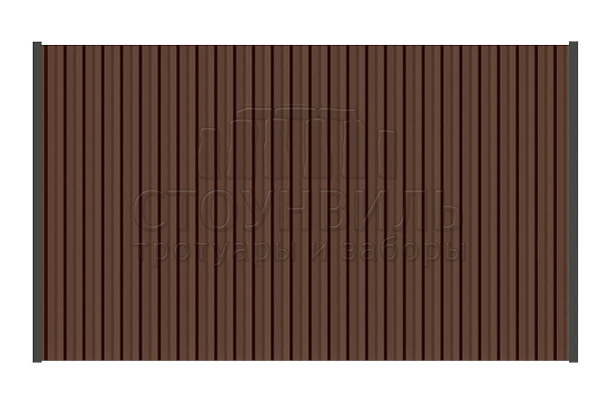Забор из профнастила, высотой 1.5 метра с двумя лагами. Цена указана с учётом монтажа.
ЦВЕТ
Забор из штакетника+монтаж
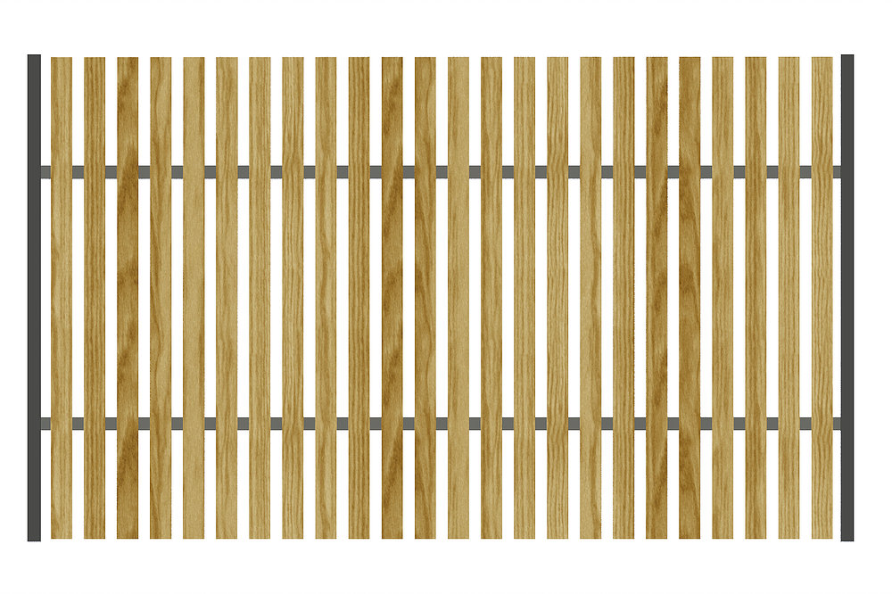Забор из деревянного штакетника высотой 1.5 метра с двумя лагами. Цена указана с учётом монтажа.
Столбы Катрина+штакетник, высота 1.5м(без монтажа)
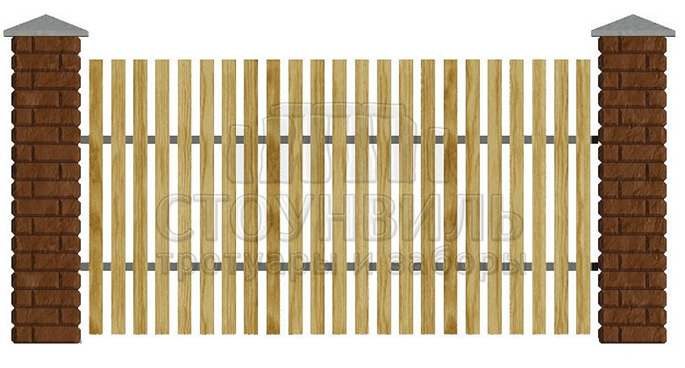
Забор из элементов Катрина, с заполнением из штакетника. Расчет стоимости складывается из цены 1 погонного метра забора. Формирование окончательной стоимости зависит от длины вашего забора, высоты столбов и внутреннего оформления. На фотографии представлена секция длиной 3 м (по осям столбов).
Дополнительно рассчитываются: ворота, калитки, доставка.
ЦВЕТ
Столбы Катрина+3D сетка, высота 1,5м(без монтажа)
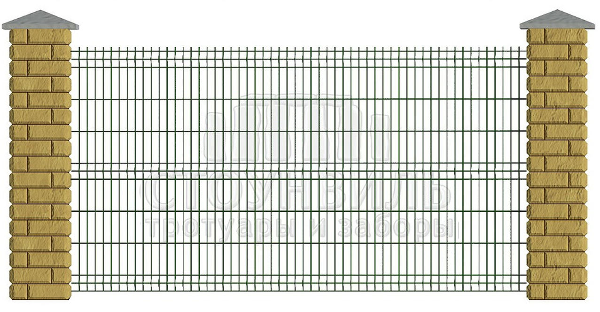
Забор из элементов Катрина, с заполнением из 3D сетки.
Расчет стоимости складывается из цены 1 погонного метра забора. Формирование окончательной стоимости зависит от длины вашего забора, высоты столбов и внутреннего оформления. На фотографии представлена секция длиной 3м (по осям столбов).
Дополнительно рассчитываются: ворота, калитки, доставка.
ЦВЕТ
Забор Катрина+Евроштакетник+фундамент,высота 1.5м*
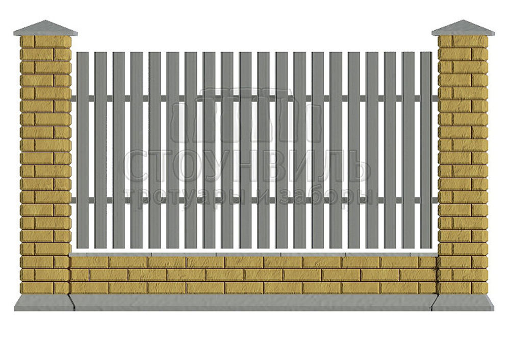
*Начальная цена указана без монтажа
Забор из элементов Катрина, с заполнением из Евроштакетника с готовым фундаментом (основания - ригеля).
Расчет стоимости складывается из цены 1 погонного метра забора. Формирование окончательной стоимости зависит от длины вашего забора, высоты столбов и внутреннего оформления. На фотографии представлена секция длиной 3,22 м (по осям столбов).
Дополнительно рассчитываются: ворота, калитки, доставка.
ЦВЕТ
Забор Катрина+3D сетка+фундамент, высота 1.5м*
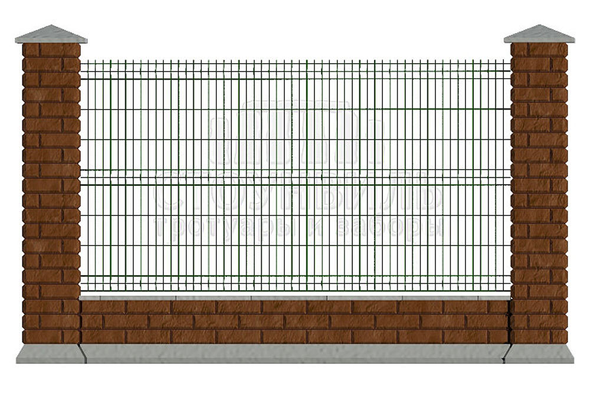
*Начальная цена указана без монтажа
Забор из элементов Катрина, с заполнением из 3D сетки с готовым фундаментом (основания - ригеля).
Расчет стоимости складывается из цены 1 погонного метра забора. Формирование окончательной стоимости зависит от длины вашего забора, высоты столбов и внутреннего оформления. На фотографии представлена секция длиной 3,22 м (по осям столбов).
Дополнительно рассчитываются: ворота, калитки, доставка.
ЦВЕТ
Забор Катрина+фундамент, высота 1.5м(без монтажа)
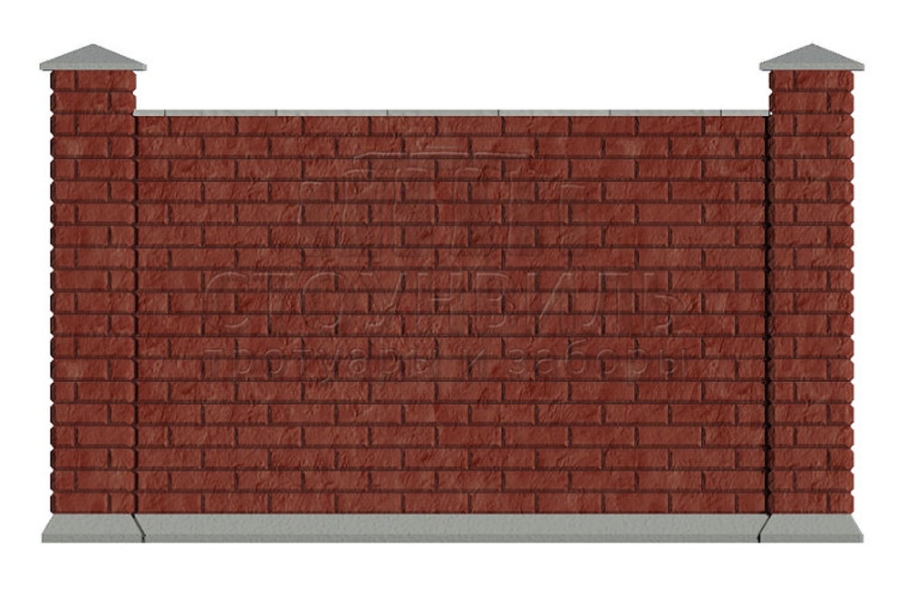
Забор из элементов Катрина, с глухим заполнением, с готовым фундаментом (основания - ригеля).
Расчет стоимости складывается из цены 1 погонного метра забора. Формирование окончательной стоимости зависит от длины вашего забора, высоты столбов и внутреннего оформления. На фотографии представлена секция длиной 3,22 м (по осям столбов).
Дополнительно рассчитываются: ворота, калитки, доставка.